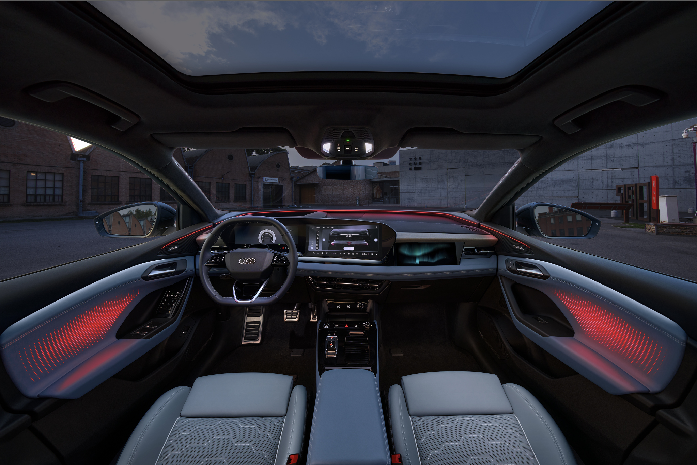

We produced a teaser video for Audi's event in Beijing. Utilizing cutting-edge CGI effects technology, we highlighted Audi's design philosophy. The visual effects in this video were inspired by the taillight design of the Audi Q6L e-tron.
